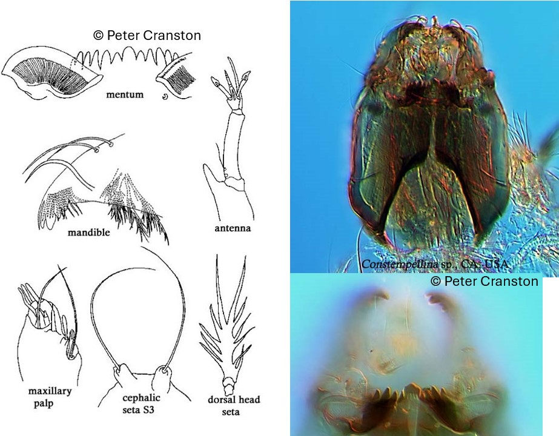

Constempellina brevicosta (Edwards, 1937)

Antennes
Socle antennaire proéminent portant une forte épine. Organes de Lauterborn bien développés et opposés, placés sur des piédestaux courts.
Mandibules
Dent dorsale, dent apicale et 2 dents internes pointues.
Mentum
Dent médiane arrondie ou faiblement entaillée. 6 paires de dents latérales. Plaques Ventromentales en forme d'éventail, largement séparées médialement.
Labre
SI en forme de peigne., SII plumeuses, situées sur un grand piédestal. Peigne de l’épipharynx composée de 3 plaques minces et pointues
Prémandibules
Prémandibules avec 5 dents.
Ecologie
Genre présent dans les lacs et les rivières. Les larves construisent des fourreaux transportables.
Espèces recensées en France
1 : Constempellina brevicosta